Dimbin’ny Ala Andriamandimbisoa · Webmarketing & UX
J’aime partir d’une idée et voir jusqu’où elle peut aller.
Une campagne peut devenir une vidéo, une vidéo peut donner envie de créer une page, une page peut raconter toute une histoire. Alors je teste, je crée, je recommence parfois, jusqu’à ce que l’idée prenne vraiment forme.
Andriamandimbisoa Dimbin'ny Ala · 24 ans
Moi, c'est Dimby.
Mon vrai prénom, c'est Dimbin'ny Ala. Mais tout le monde m'appelle Dimby, c'est plus simple. J'ai 24 ans. J'ai commencé par un bac pro Gestion-Administration, puis un BTS MCO. Ensuite, j'ai tenté un bachelor en conception d'applications. Je me suis vite rendu compte que ce n'était pas pour moi, parce que j'ai besoin de créer. Alors j'ai choisi de refaire ma 3e année, en Bachelor Webmarketing & UX à Hetic. Et cette fois, je suis à ma place.
Tananarive · Madagascar
Bac pro
Lycée français de Tananarive Gestion-Administration
Mention assez bien2020 – 2022 · Bondy
BTS MCO
Lycée Jean Renoir Management Commercial Opérationnel
Mention assez bienL'École Multimédia
Bachelor
Conception et développement d'applications
Pas fait pour moi2026 – 2027 · Paris 13
Bachelor
Hetic Webmarketing & UX
Ce que j'apporte à une équipe
Comprendre Créer Concevoir
Je comprends ce dont les gens ont besoin, parce que la vente m'a appris à écouter.
Je crée des vidéos et des posts qui ressemblent à la marque.
Je conçois des maquettes sur Figma, prêtes à être testées.
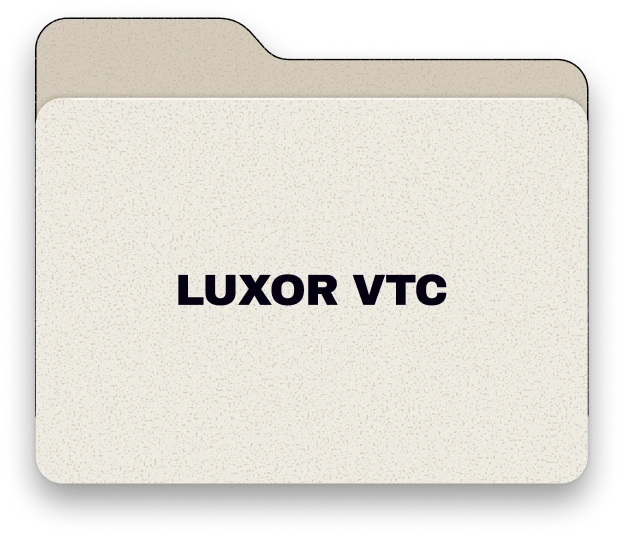
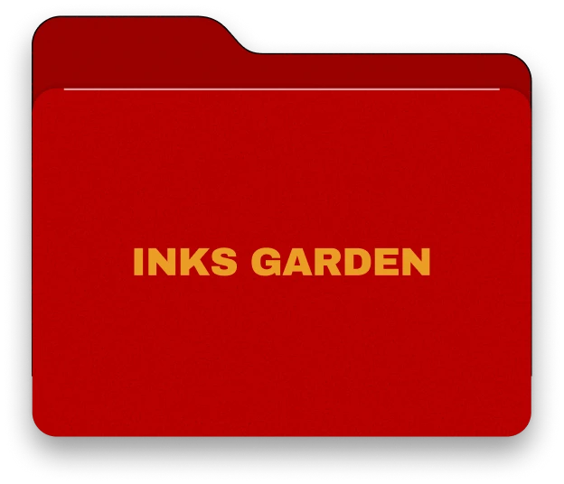
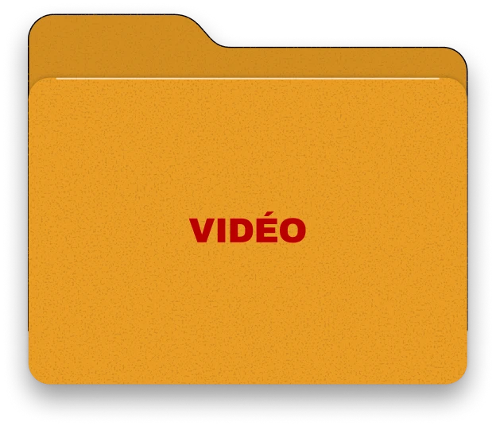
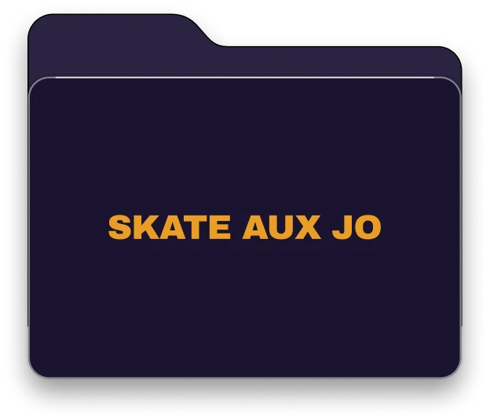
2023 – 2025
Équipier polyvalent
McDonald's · Arcueil J'ai appris à travailler vite, bien et en équipe.
2022
Assistant community manager
Inks Garden · Paris 2e J'ai créé des vidéos et des posts pour Instagram et Facebook, et planifié les publications.
2021 – 2022
Conseiller de vente
Darty · Paris 14e Je conseillais les clients pour leur trouver le bon produit.
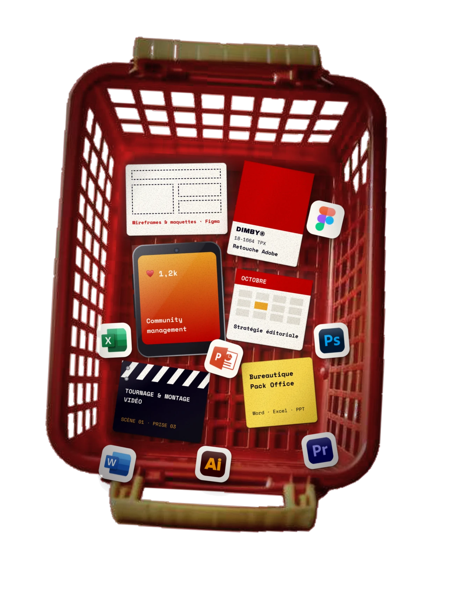
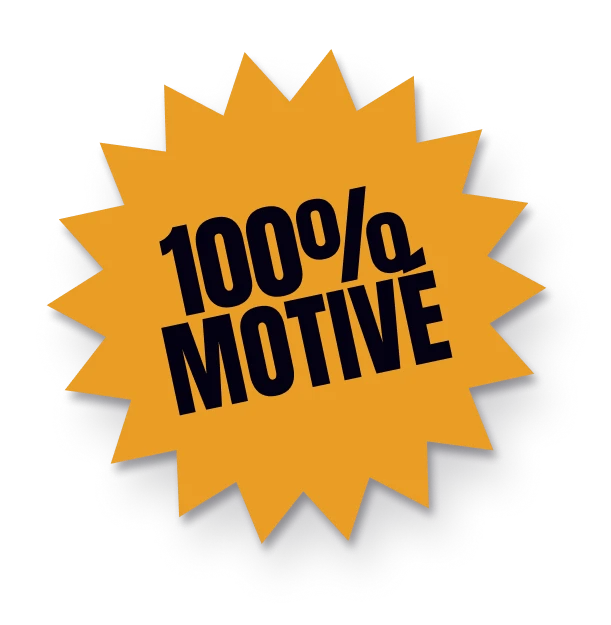
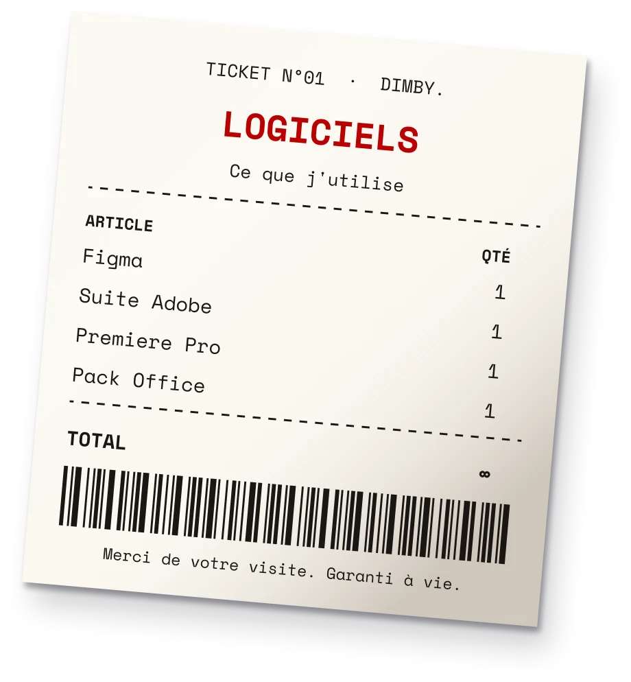
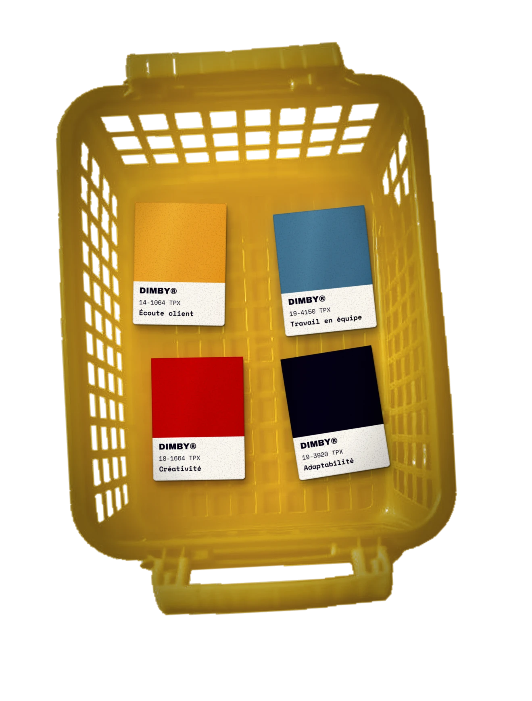
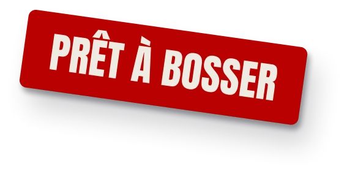
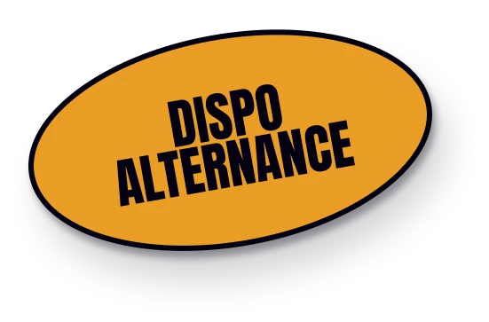
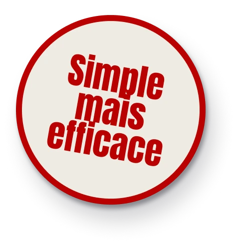
Je cherche une alternance ou un stage, dès maintenant